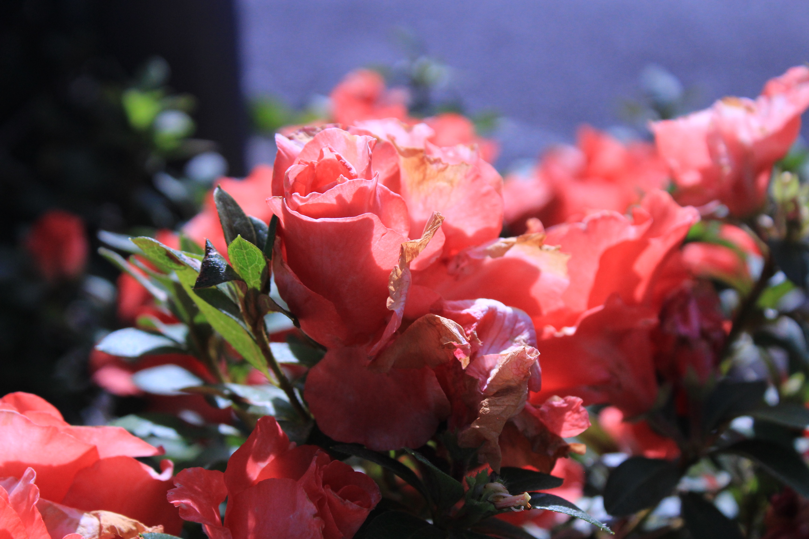
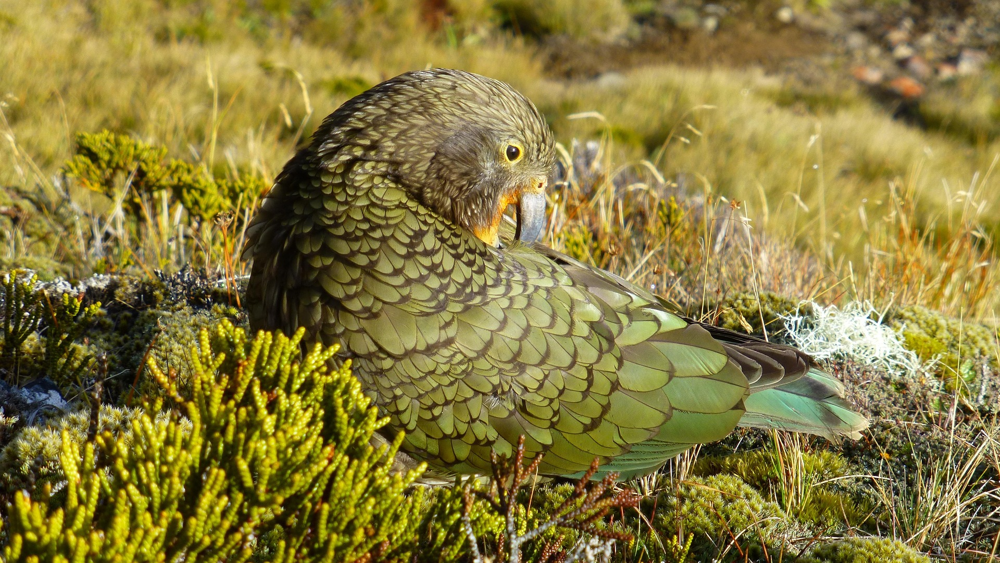
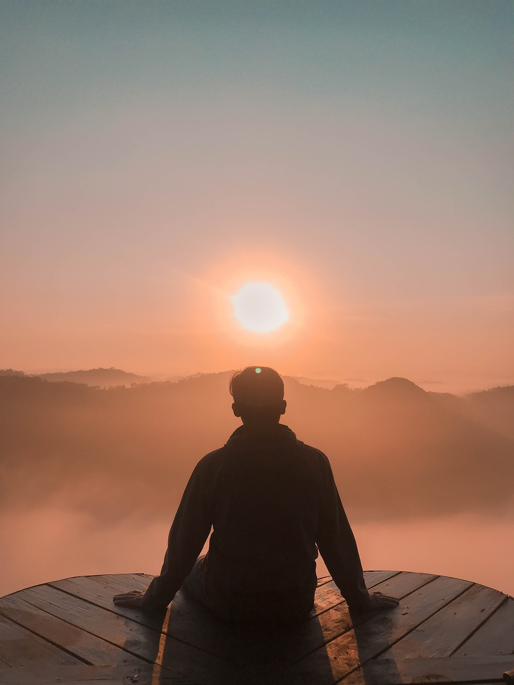
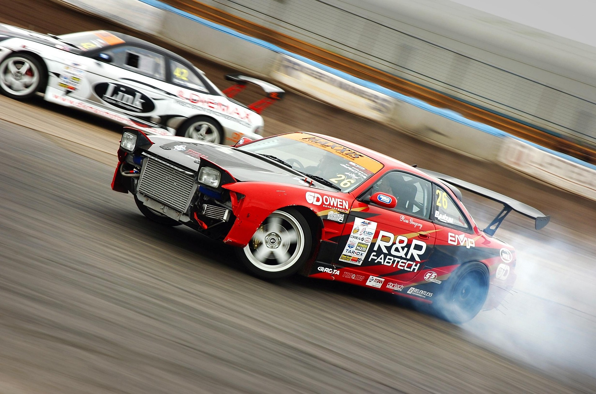
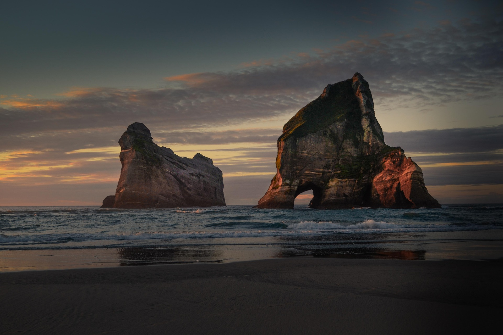

Array Of Azaleas
A cluster of delicate azaleas, joined together like a bright flame against a shadowy void. The harsh sunlight pierces through the petals with radiance of deep and velvety shadows. Some blooms dare to reach upward in a tense manner, while others remain gentle, silent and somewhat decayed. Lastly, the violet tones seen beyond the flowers ignite trails of warmth, making the blossoms appear within their own internal light.

Resting Kea
Bathed in the golden hour light a stunning Kea is seen resting between the soft tussock of the earth's nature. The sun and shadows join together to expose the delicate details of New Zealand's native bird within a spotlight of warmth, causing an intimate contrast across the environment and its animal. Seen beyond its silhouette is the unspeakable country terrain which blends into a soft blur.

At The Edge Of Silence
Shown like the last person left in the world he sits looking out beyond the misty abyss, while the surrounding sun around him vanishes into the gentleness of the upper sky. Mountains which were once seen within the distance now all dissolve into delicate and hazy ridges such as they were ghosts.

Chasing Velocity
....

The Ocean
....